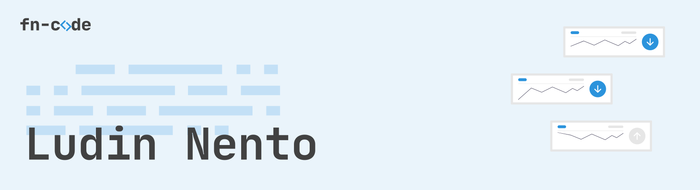

GitHub Activity
Pinned Repositories
Experience
Software Engineer · Lamahu Multimedia
Oct 2018 – Jun 2022
- Design and develop several REST API modules, like authentication, update, input data and other for mobile application and other service. (Golang)
- Design and implement a gateway application for communicating between IoT device, and web application with MQTT broker. (Golang)
- Design and implement an internal tool for update/migrate existing application. (Golang)
- Design and implement an internal tool for monitoring service. (Golang)
- Design and implement simple protocol for controlling raspberry pi and Arduino using based on tcp protocol, and websocket. (Golang)
- Develop and integrate application with mikrotik Router OS API, for manage mikrotik data. (Golang)
- Design and develop several react component for monitoring IoT device with NextJS and ReactJS
- Design and develop an IoT firmware for ESP32 device (C++)
- Maintenance an existing application
- Strong working knowledge of API testing tools like Postman
Backend Engineer · Diskominfo Bonebolango
Aug 2019 – Apr 2020
- Develop several REST API modules for the employee attendance application, especially authentication and location validation. (Golang)
- Design and develop several modules for the application of mapping the location of public facilities. (PHP)
- Design and implement Covid-19 web application and REST API. (PHP)
- Maintenance an existing internal application
Software Engineer · Antar Antar Indonesia (Antar Antar Bentor Online)
Nov 2016 – Aug 2017
- Develop and implement mobile android application. (Java)
- Design and develop administration application, for managing transaction. (NodeJS, Angular, Firebase, MYSQL)
- Implement Firebase Database, Push Notification, Firebase Auth SDK In Android App, and Google Maps
Web Developer · Magang Di Kejaksaan Tinggi Gorontalo
Apr 2016 – Jul 2016
- Design and implement new website template. (CSS, HTML)
- Develop and implement administration website, and database design. (PHP)